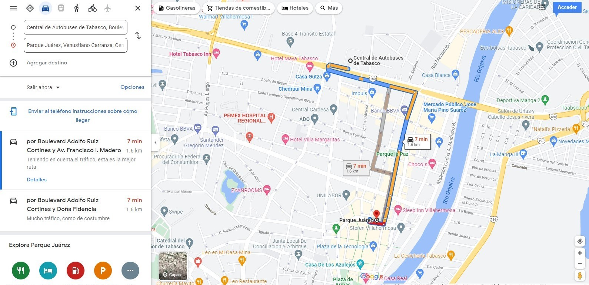
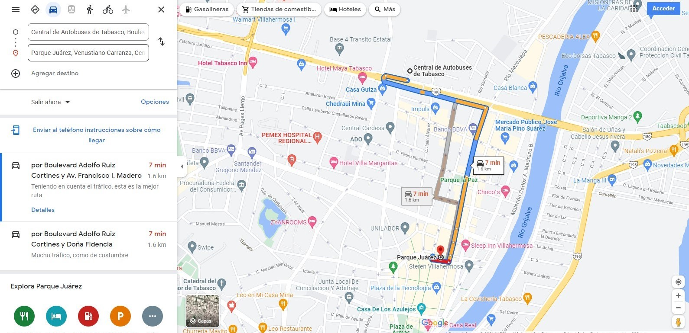

Sobre esta plaza
Fue inaugurado el 16 de septiembre de 1904 por el ex gobernador el general Abraham Vándala y el ex alcalde de Centro, Salvador de la Rosa.
El también catedrático de la Universidad Juárez Autónoma de Tabasco (UJAT) recordó que un inició se llamó “Paseo Benito Juárez”, y tenía un busto de bronce, que años después fue cambiado por una estatua.

 
